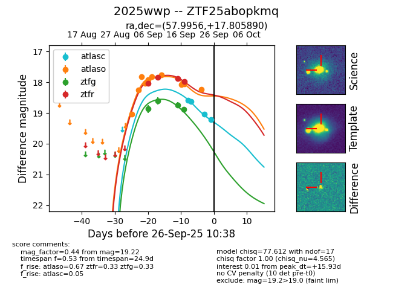
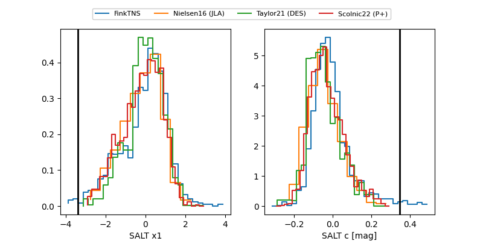

FINK: ZTF25abopkmq
Lasair: ZTF25abopkmq
ALeRCE: ZTF25abopkmq
TNS: 2025wwp
YSE: 2025wwp
ZTF25abopkmq (ztf,fink)
2025wwp (tns,yse)
equatorial (ra, dec) = (57.9956,+17.80589)
galactic (l, b) = (172.3317,-27.27803)


last atlasc=19.22, atlaso=18.23, ztfg=18.89, ztfr=17.99
4 atlasc, 10 atlaso, 4 ztfg, 4 ztfr detections